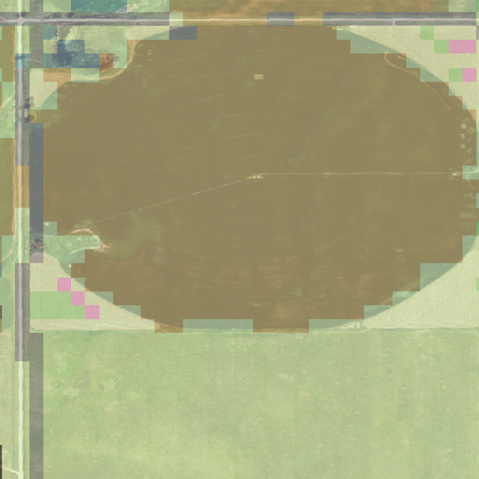
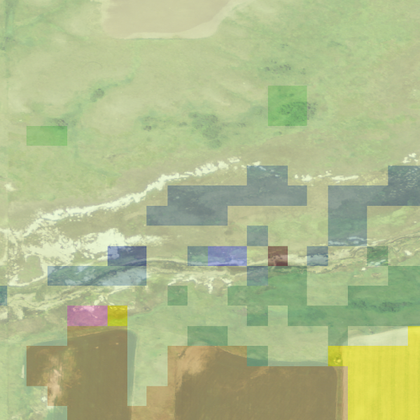
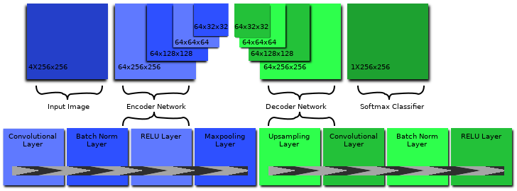
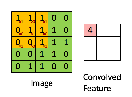
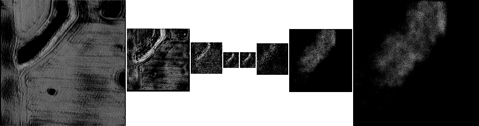

Applying Convolutional Neural Networks to Per-pixel Orthoimagery Land Use Classification
By Jordan Goetze
Computer Science
North Dakota State University
Fargo, North Dakota 58103
jordan.goetze@ndsu.edu
Overview
- Terminology
- Introduction
- Previous Work
- Data Set Preprocessing
- Model
- Training & Evaluation
- Results and Observations
- Future Work
Terminology
Terminology
Per-pixel image classifications: Classifying each pixel of an image.
Useful for:
- Scene labeling for autonomous driving
- Inferring relationships between objects in an image.
Terminology
Land-Use Classification: Classifications of what a given tract of land is used for.
Potential uses:
- Approximating crop yields by year
- Tracking changes in land use
- Tracking changes in forestry and vegitation
Terminology
Orthoimagery: An aerial photograph where corrections have been made for various displacements such as building tilt and scale variations caused by terrain relief.
Terminology
Convolutional Neural Networl (CNN): a type of neural network where the connectivity pattern of it's neurons is inspired by the organization of the visual cortex of an animal.
Useful for:
- Scene labeling for autonomous driving
- Inferring relationships between objects in an image
- Whole-image classification
Introduction
Introduction: Technology, Imagery and Data
- Cost of satelites and drones is decreasing
- Cost of orthoimagery decreasing
- Ammount of availiable orthoimagry increasing
- Ammount and quality of labeled or annotated orthoimagery has not kept pace
Introduction: Availiable Data
National Agricultural Imagery Program (NAIP):- Provides imagery spanning the majority of the continental United States
- Imagery captured at 1 meter Ground Sample Distantce (GSD)
- Imagery consists of red, green, blue, and near-infrared image layers
Introduction: Availiable Data
National Agricultural Statistics Service (NASS) Land-Use Classifications:- Land-Use classifications for the continental United States
- Low resolution accuracy compared to NAIP imagery.
- 1 NASS pixel represents a 50 square meter area in the NAIP Imagery
- Poor quality classifications
Introduction: NASS - Mislabeled Pixels

Introduction: NASS - Clipped Organic Features
Introduction: NASS - Poor Representation of Fine Features
Introduction: Goal
Create a model which can efficiently produce higher resolution labeled orthoimagery .
Previous Work
Previous Work
- Focused on identifiying roads or buildings.
- Apparently little research into identifying crops or other agricultural features
- Per-pixel classifications of orthoimagery fall under the realm of scene recoagnition.
- The SegNet model provides a reletively new approach to scene recoagnition.
Previous Work: SegNet
- Deep Convolutional Encoder-Decoder Network
- Produces good results when applied to CamVid dataset.
Previous Work: SegNet Demo
Previous Work: SegNet
- Deep Convolutional Encoder-Decoder Network
- Produces good results when applied to CamVid dataset.
- Produces high accuracy labels
- Generates classifications in real-time
Data Set Preprocessing
Data Set Preprocessing: Data Sets
- National Agricultural Imagery Program (NAIP) Imagery
- National Agricultural Statistics Service (NASS) Land-use classifications
Data Set Preprocessing: Acquisition
- NAIP Imagery Downloaded via the EarthExplorer tool hosted by The United States Geographical Services
- The Geospacial Data Abstraction Library (GDAL) tool set is used to generate a set of shapefiles using the NAIP Imagery
- These shapefiles are uploaded to the NASS tool CropScape and are used to select regions for which to download land-use classification data.
Data Set Preprocessing: Resizing
- NASS images are warped with gdalwarp to match the resolution of the corresponding NAIP image.
- The NASS images are georectified
- When resized with gdalwarp, pixels are not shifted or offset
Data Set Preprocessing: Slicing
- NAIP and NASS images are sliced into 256x256 pixel swatches
- Each NAIP image layer is stored as a separate greyscale PNG image
- The NAIP red and near infrared layers are used to compute a Normalized Difference Vegetation Index (NDVI) layer scaled from 0 to 255
- This NDVI layer is stored in place of the near infrared layer.
Data Set Preprocessing: Recategorization
- NASS Land Use Classifications contain 255 possible labels. These are simplfied down into 5 groups:
- Forestry
- Developed
- Field
- Background
Data Set Preprocessing: Recategorization
| Forestry | Developed | Field | Water | Background |
|---|---|---|---|---|
| 0.063% | 4.84% | 76.26% | 16.05% | 2.22% |
Model
Model: SegNet
Kernel Size 7x7
Model: Convolutions and Kernel Size
Example with 3x3 kernel size
Kernel size impacts how fine of features will be recoagnized.
Resulting image is called a feature map or feature window.
Model: SegNet
Model: Max Pooling Operation

Down samples the feature window
SegNet stores the indices of the maximum values for later
Model: SegNet
Max pool + Indice Unraveling
Model: SegNet Variants
Kernel Size 3x3 and 5x5
Training & Evaluation
Training
- Trained on 90% of availiable image swatches
- approx. 72,000 image swatches
- Batches of 15
- 25 Epochs
- Checkpoints are saved every 100 steps
Evaluation
- Evaluation is done on the remaining 10% of availiable image swatches
- approx. 8,000 image swatches
- The checkpoint with the highest evaluation accuracy is selected
Analysis
Analysis: Evaluation Accuracy
Results: Not good?
| 3x3 Convolutional Kernel | 71.61% |
| 5x5 Convolutional Kernel | 73.33% |
Analysis: Accuracy of training labels
Observed that the model often produces better representations of features than the NASS classifications
Future Work
Future Work
- K-Fold Cross Validation
- Find a way to manage the discrepancy between the label dataset and classification
- Find which fields in the NASS classifications were ground truthed
- Ground truthing is based on the June Agricultural Survey
- Unfortunately this information is classified.
- Find a new classification data set?
- National Land Cover Database (NLCD)
- Less focused on agriculture
- National Land Cover Database (NLCD)
- Find which fields in the NASS classifications were ground truthed
Thank You
References
- https://en.wikipedia.org/wiki/File:OrthoPerspective.svg
- https://en.wikipedia.org/wiki/Convolutional_neural_network
- https://ujjwalkarn.me/2016/08/11/intuitive-explanation-convnets/